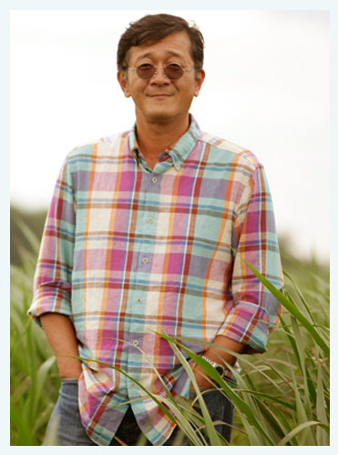
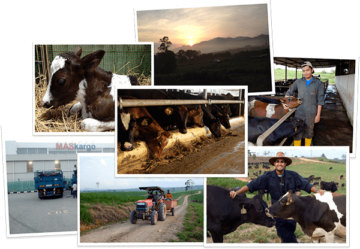
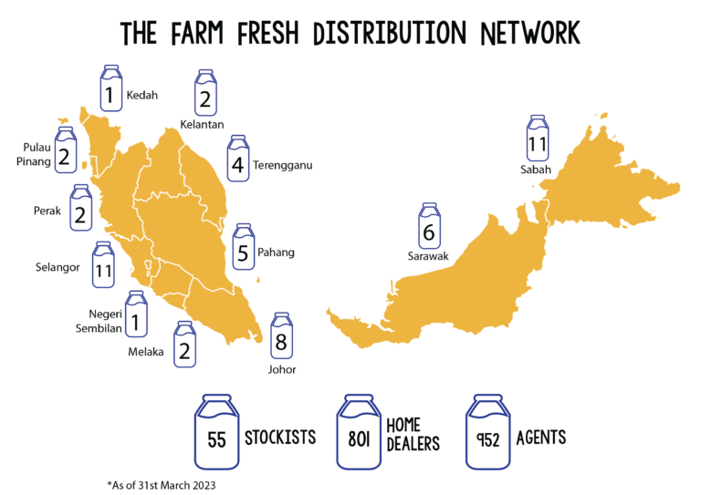
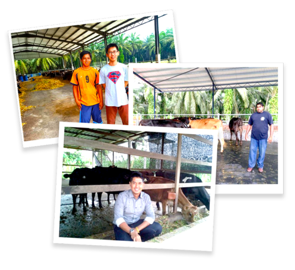

Ever since growing up in a small town in Perak,
Loi Tuan Ee has held a deep respect for agriculture and a love of nature.
Noticing that many Malaysian brands were selling products made from reconstituted or powdered milk, he decided to purchase a small plot of land in Johor and import 60 Holstein Jersey cows from Australia,
setting up Farm Fresh Milk Sdn. Bhd.
His dream? To produce fresh and pure dairy just as nature intended.

Building A Legacy
At first, he found buyers hard to come by. After all, who would trust a Malaysian dairy brand? But one day,
a major retailer took a chance on Farm Fresh Loi’s dream was becoming a reality.

Onwards And Upwards
Farm Fresh was growing faster than Loi could have ever imagined. To help expand his operations, he enlisted the help of his old friend Azmi Zainal as partner and brought in Khazanah National,
the strategic investment arm of the Government of Malaysia, as an investor in the company.
These collaborations laid the groundwork for the company’s continued success.
Natural Goodness For All Malaysians
With Farm Fresh products available in all major cities in Malaysia, Loi and Azmi pioneered an innovative distribution method that would allow rural Malaysians to discover natural goodness too.
The Farm Fresh Home Dealer Network empowers micro-entrepreneurs (many of whom are women)
to make a sustainable income by distributing Farm Fresh products within their communities.
As of March 2023, we have 55 regional stockists, 801 home dealers, and 952 agents in our network, covering every state and region of Malaysia. Find and be connected to one through our very own e-commerce platform, Farm Fresh Mart.

Moo-ing Down Under
To meet growing demand, Farm Fresh Milk Sdn. Bhd. acquired two dairy farms and a processing plant in Australia.
The high quality milk produced on these farms gave birth to two new brands - Yarra and Henry Jones - that allowed
consumers in Malaysia to enjoy the goodness and great taste of Australian dairy.
Empowering Local Farmers
Local farmers are the heart and soul of Malaysian agriculture, and we’re helping these farmers improve their livelihoods.
Through our rural farmer network, we provide farmers with mentorship, ongoing technical support and access to innovative technology which improves their milk yield and quality. Furthermore, we commit to purchasing
their milk at above the prevailing market price, thus empowering the sustainable expansion of their business.
Discover the other ways that we’re giving back to the community.

Malaysia’s No.1 Natural Dairy Brand
More than 10 years after we were founded on a humble farm in Johor, Farm Fresh is now Malaysia’s leading dairy brand.
Through our wide range of products, we strive to provide quality nutrition to all Malaysians. This includes our best-selling milk- and yogurt-based products,
and even plant-based products such as soy, almond, and oat milk.
As we seek to bring natural goodness to Malaysians (and beyond), we continue to stay true to our love of the land and our ladies,
who provide the finest and creamiest produce, just as nature intended.